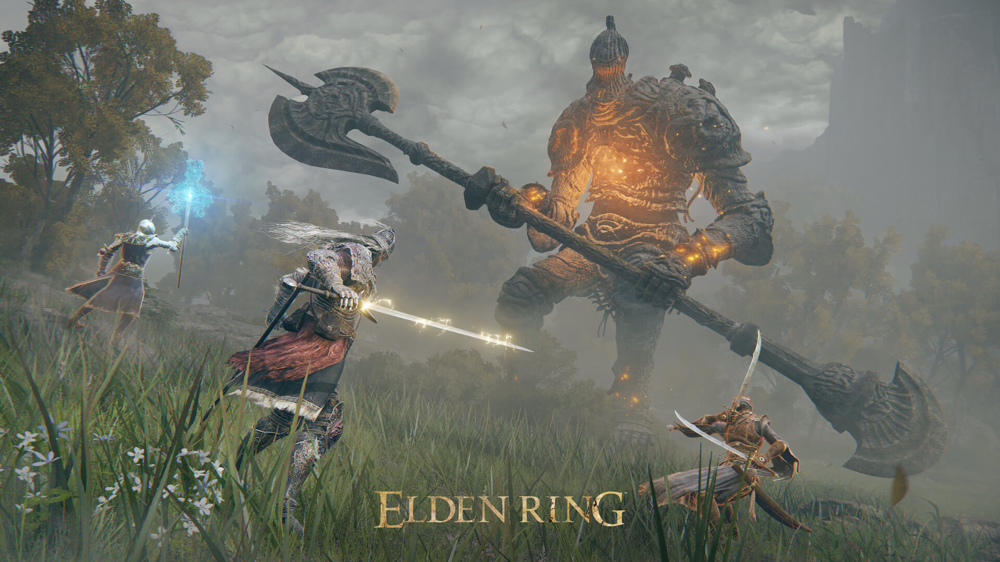
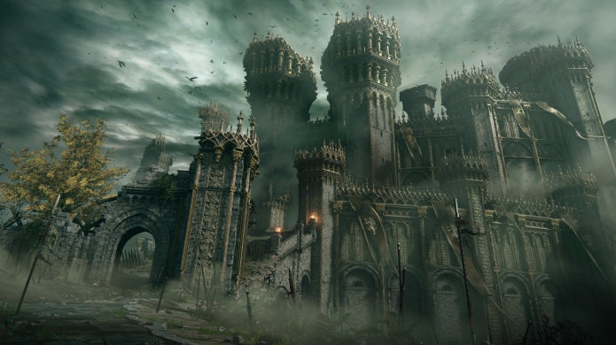

Price: $49.93
Release Date: 02/25/2022
Age Rating: Mature
"The Golden Order has been broken.
Rise, Tarnished, and be guided
by grace to brandish the power of the Elden Ring and become an Elden
Lord in the Lands Between."
Journey through the Lands Between, a new fantasy world created by
Hidetaka Miyazaki, creator of the influential DARK SOULS video game
series, and George R. R. Martin, author of The New York Times
best-selling fantasy series, A Song of Ice and Fire. Unravel the
mysteries of the Elden Ring's power. Encounter adversaries with profound
backgrounds, characters with their own unique motivations for helping or
hindering your progress, and fearsome creatures.ELDEN RING features vast
fantastical landscapes and shadowy, complex dungeons that are connected
seamlessly. Traverse the breathtaking world on foot or on horseback,
alone or online with other players, and fully immerse yourself in the
grassy plains, suffocating swamps, spiraling mountains, foreboding
castles and other sites of grandeur on a scale never seen before in a
FromSoftware.

Create your character in FromSoftware's refi ned action-RPG and defi
ne your playstyle by experimenting with a wide variety of weapons,
magical abilities, and skills found throughout the world. Charge into
battle, pick off enemies one-by-one using stealth, or even call upon
allies for aid. Many options are at your disposal as you decide how to
approach exploration and combat title.>
